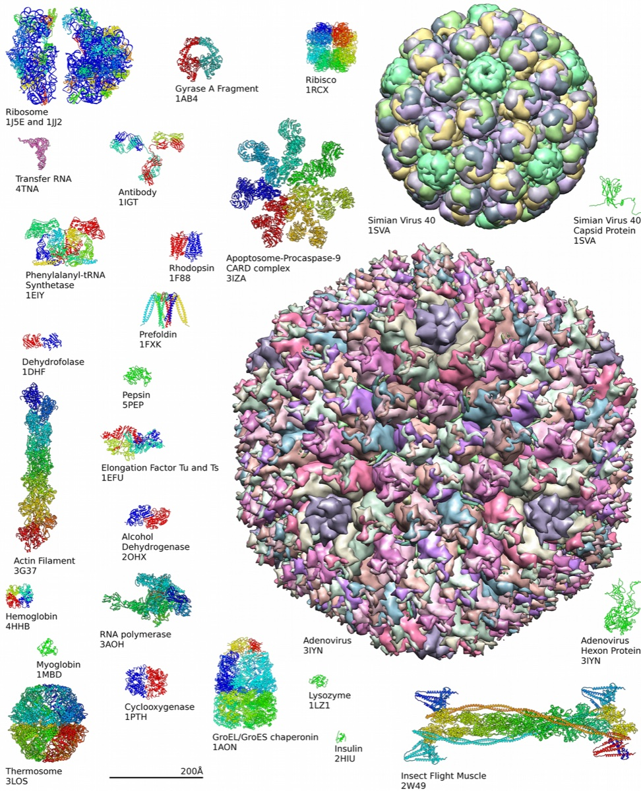

Executive Summary
AlphaFold solved, with remarkable accuracy, the question of what three-dimensional shape a protein folds into. Yet a protein's function comes not from that single frozen shape but from the way the shape flexes and shifts moment to moment. In the words of a 2026 roadmap paper, a quantitative understanding of how dynamic structural change unfolds from sequence remains unsolved. This piece argues that the reason it remains unsolved lies not in the models but in the data.
The real backdrop to AlphaFold's success was PDB, a rare and unusually clean dataset. More than 220,000 experimentally verified structures had accumulated as ground truth, and new ones still arrive steadily. Protein motion has no such canonical trajectory dataset. The public dynamics data that exists — ATLAS with 1,390 proteins, GPCRmd with 705 — is three to four orders of magnitude smaller than the static structure data.
So research teams are filling that gap by making the data that doesn't exist yet, using simulation and generative models. BioEmu trained on a vast body of molecular dynamics data it produced itself. DiffEnsemble extracted the traces of motion hidden inside static structures and turned them into the basis for a diffusion model to learn from. What do you learn from when there is no ground truth? The next frontier of AI-Ready Data opens right here.
Key Figures
Four numbers compress the data gap between static structure and dynamics: the scale of the experimental structures AlphaFold learned from, the far smaller scale of the dynamics datasets set against it, the volume of simulation teams generated themselves because none existed, and the improvement won by the latest model that pulls motion back out of static data.
Sources: Cui et al., Briefings in Bioinformatics (2025) · BioEmu (Nature Methods, 2025) · DiffEnsemble (bioRxiv, 2026)
220K+
PDB experimental structures
The ground-truth data AlphaFold learned from
1,390
ATLAS dynamics proteins
100× smaller than the static structure set
200 ms
BioEmu's self-run MD
Training data built because none existed
+28.9%
DiffEnsemble RMSD gain
Motion extracted from static structures
Function Doesn't Fit in a Snapshot
The problem AlphaFold solved is a clear one. Feed it an amino-acid sequence and it predicts, with accuracy rivaling experiment, what three-dimensional shape that protein folds into. A structure that once took a lab months of work to obtain now appears on screen in minutes. One of the long-standing bottlenecks of the life sciences was opened this way.
But that prediction is closer to a single still photograph. Inside the cell a protein does not hold still. It folds and unfolds without pause, its domains open and close, and it meets other molecules to form fleeting new shapes. An enzyme catalyzing a reaction, a receptor relaying a signal, a drug settling into a binding pocket — most of this happens on top of that motion. Function is carried less in the shape itself than in the way the shape moves.
Structural biology gives these two things different names. One is static structure, a single shape observed under a particular condition. The other is dynamics, the set of many shapes a protein can move between — its conformational ensemble — together with the paths that connect them. The achievements of AlphaFold and its kin are concentrated on the first. A 2026 roadmap paper written by 43 researchers confronts this contrast head-on, stating that a quantitative understanding of how dynamic structural change and higher-order assembly unfold from sequence is still unsolved.

None of this means the still image is worthless. On the contrary, it is because we have the photograph that we can now ask the next question. What remains is to predict many photographs, and the connections between one photograph and the next. And it is precisely here that the nature of the problem shifts from the model to the data.
Why AlphaFold Really Worked
AlphaFold's success is often told as a triumph of model design. The architecture was, of course, excellent. But standing quietly in front of it was one enabling condition: PDB, the Protein Data Bank. It is a public repository holding more than 220,000 experimental structures, verified down to the atomic level by X-ray crystallography, NMR, and cryo-electron microscopy.
Why this data is special comes down to three things. First, the ground truth is verified by experiment; what the model imitates is measured, not estimated. Second, the scale is large, with hundreds of thousands of cases showing how different proteins fold. Third, the answers keep arriving fresh. AlphaFold was validated on structures deposited after its training cutoff, generalizing not only to curated benchmarks but to genuinely unseen structures.

Fold those conditions into one sentence and it reads: the answers exist, and they keep coming. In supervised learning there is rarely a better starting point. As special as AlphaFold was, the data it stood on was special too. Which leads naturally to the next question. Does dynamics have a dataset like this?
Dynamics Has No Canonical Dataset
The short answer is no. And this absence is the root reason dynamics remains unsolved. Not because no successor to AlphaFold has arrived, but because there is no ground truth for such a successor to learn from.
Put the scale of the public dynamics datasets next to static structure and the gap becomes plain. ATLAS, which collects molecular dynamics simulations under a unified protocol, holds 1,390 proteins; mdCATH, broadened to the domain level, holds 5,398; GPCRmd, narrowed to a specific receptor family, holds 705. Meanwhile PDB holds more than 220,000 experimental structures, and the AlphaFold database holds over 200 million predicted ones. Dynamics data is three to four orders of magnitude smaller.
Scale is not the only problem. A 2025 review in Briefings in Bioinformatics states explicitly that existing static databases carry only limited dynamic information. Static databases record a single stable structure under a particular condition, the molecular dynamics data meant to supplement them is capped at the millisecond scale and costly to compute, and directly measuring a structure as it changes over time is an experiment that is itself painfully hard and slow. The still photograph is easy to take; the film that captures motion is rarely obtained.
AlphaFold had PDB as its canon; dynamics has no corresponding canonical trajectory dataset. Redefine the problem and it comes out like this: not how to scale the model up further, but where to source the ground truth to train it on. When enough answers do not yet exist in the world, what can a research team do?
The Teams Making the Missing Data
The answer is surprisingly simple. If it doesn't exist, make it. Right now several teams in this field are producing the data that doesn't exist yet, each in a different way, to fill the training gap. Three approaches stand out.
4.1Simulate It Directly — BioEmu
Microsoft Research's BioEmu samples a protein's conformational ensemble with a conditional diffusion model. For training it used the predicted structures of the AlphaFold database plus 200 milliseconds of molecular dynamics simulation data the team ran itself. With no canonical trajectory dataset to draw on, they produced ultra-large-scale simulations on supercomputers and used them as training material. The result: statistically independent structural samples obtained up to 100,000 times faster than conventional simulation, capturing motions that matter directly for drug discovery — the opening and closing of domains, or a hidden binding pocket that normally stays shut.
4.2Turn Static Data into Flow — AlphaFlow
AlphaFlow fine-tunes AlphaFold and ESMFold with flow matching, converting a single-structure predictor into a generator that produces many shapes. Here too, ground-truth dynamics data was scarce: the molecular-dynamics-tuned version trained on a mere 82 proteins. First build the body on abundant static data, then finish it off on rare dynamic data. This pattern — abundant first, rare last — is shared by nearly every model in the field.
4.3Mine the Motion Inside the Still Image — DiffEnsemble
The most intriguing idea is DiffEnsemble. Instead of making new data, it treats the traces of motion as already latent inside the static structure data we have. It learns a latent dynamics representation from PDB's static structures and folds in the structural profiles of the AlphaFold database as a conditional guide to steer the diffusion process. On ATLAS's 72-target benchmark, the pairwise RMSD correlation that measures an ensemble's shape diversity was 28.9% higher than AlphaFlow, and the RMSF correlation that gauges flexibility was 11.3% higher. On 42% of the targets it pinpointed the protein's dominant motion.
All three approaches are impressive, but they share a common shadow: without ground truth, verification is hard too. A generative model can produce a fake protein that looks structurally plausible yet does not actually function, and there is no solid measured standard to judge whether it is real. On top of that, the RMSD and TM-score in common use measure only the similarity of static shapes. Evaluating motion calls for new metrics like RMSF and RMWD, which have not yet settled into standards. Not only what to make, but what to grade the made thing against, is an open question too.
The field is not leaving that shadow untended. Recent work runs the structures a generative model produces quickly back through molecular dynamics or a Markov state model, using the laws of physics to check how often each shape actually appears and where it sits on the energy landscape. The generative model throws out candidates; the physics simulation filters which of them are real. Verifying made data right where it was made — this division of labor acknowledges the limit that a generative model alone reports imprecise physical quantities, and it is settling in as the field's practical way of building trust on a problem that still has no answer key.
Not Data to Clean, but Data That Isn't There
So far the conversation around AI-Ready Data has mostly stayed with how we handle data that already exists. Gathering scattered data, scrubbing dirty data, labeling it, organizing it into a canon. It was work that raised quality on the premise that the data exists somewhere.
Protein dynamics shows a place where that very premise wobbles. Here the data to be cleaned is not dirty; the ground truth to train on simply does not exist in sufficient quantity. The next frontier is not data that is hard to clean, but data that isn't there. And at this frontier the question changes. Not how to scrub it, but what to base learning on when there is no answer key.
The data made with simulation and generative models is one form of that answer. But made data comes with a new responsibility. Unless you design, alongside it, how much of reality the data reflects, how far it can be trusted, and what will verify it, plausible-but-wrong data contaminates the learning. The ability to make data and the ability to make made data trustworthy are two different problems.
Editor's Note. This is where Pebblous's reason for talking about data quality touches ground. It began with cleaning data, but the question that grows more important from here is what to build on when the data isn't there. How to verify the trust in made data, and what to grade a problem with no answer key against — this attempt to learn a protein's motion shows, in advance, the next road that data must travel first.
AlphaFold solved a single structure, and behind it stood PDB, an uncommonly clean body of data. The next challenge, to solve motion, is blocked not at the model but at the data, and so teams are moving forward by making the missing data themselves. What do you learn from when the answer does not yet exist in the world? Thank you for looking into that question with us.
Pebblous Data Communication Team
July 24, 2026
References
Core Papers
- 1.Griffié, J. et al. (2026). "Protein Dynamics Beyond Structure Prediction." arXiv preprint.
- 2."Exploring protein conformational ensembles using evolutionary conditional diffusion" (DiffEnsemble). bioRxiv (2026).
- 3.Cui, X. et al. (2025). "Beyond static structures: protein dynamic conformations modeling in the post-AlphaFold era." Briefings in Bioinformatics, 26(4), bbaf340.
- 4.Lewis, S. et al. (2025). "Scalable emulation of protein equilibrium ensembles with generative deep learning." Science.
- 5.Jing, B., Berger, B., Jaakkola, T. (2024). "AlphaFold Meets Flow Matching for Generating Protein Ensembles." ICML 2024.
- 6.Jumper, J. et al. (2021). "Highly accurate protein structure prediction with AlphaFold." Nature, 596, 583-589.
Datasets
- 7.Vander Meersche, Y. et al. (2024). "ATLAS: protein flexibility description from atomistic molecular dynamics simulations." Nucleic Acids Research, 52(D1), D384-D392.
- 8.Mirarchi, A., Giorgino, T., De Fabritiis, G. (2024). "mdCATH: A Large-Scale MD Dataset for Data-Driven Computational Biophysics." Scientific Data.
Tools & Repositories
- 9.Microsoft Research. "bioemu: Inference code for scalable emulation of protein equilibrium ensembles with generative deep learning." GitHub.